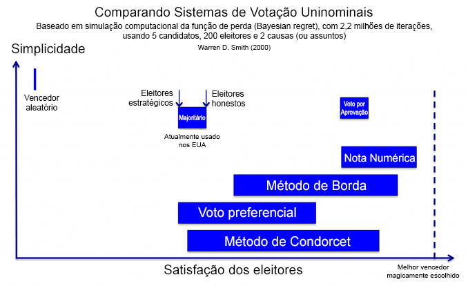

Este post é uma tradução de To Build a Better Ballot, de Nicky Case.
This post is a translation of To Build a Better Ballot, by Nicky Case.
Não, isto não é sobre a eleição de 2016 dos EUA. Bem, não é só sobre isso.
Primeiro, eu tenho que explicar um defeito esquisito no nosso sistema eleitoral - especificamente, o sistema usado pelas eleições presidenciais dos EUA e, no Brasil, nas eleições para prefeituras em municípios com menos de 200 mil eleitores (nas quais não há segundo turno). Digamos que haja dois candidatos, Rafael Retângulo  e Taís Triângulo
e Taís Triângulo  , em dois eixos políticos. (por exemplo, “esquerda vs. direita” e “globalista vs. nacionalista”) Digamos também que há um eleitor
, em dois eixos políticos. (por exemplo, “esquerda vs. direita” e “globalista vs. nacionalista”) Digamos também que há um eleitor  que simplesmente vota em quem tiver a posição política mais próxima dele. Que cara isso teria?
que simplesmente vota em quem tiver a posição política mais próxima dele. Que cara isso teria?
clique & arraste
os candidatos e o eleitor:
É uma escolha difícil. A Triângulo é tri-legal, mas o Retângulo vê a situação por mais lados! Infelizmente, no final, você só pode votar em um deles.
Claro, há mais que um eleitor na eleição. Vamos simular como seria uma eleição com 100+ eleitores.
arraste os candidatos & eleitores.
(para mover os eleitores, arraste o meio deles)
observe como isso muda a eleição:
Agora vamos considerar uma eleição diferente. Digamos que a Taís Triângulo já está ganhando do Rafael Retângulo nas pesquisas, e um terceiro candidato, Henrique Hexágono  , vê isso (os eleitores do Hexágono gostam de como ele trata da situação por mais ângulos). Inspirado pelo sucesso dela, Hexágono entra na disputa e adota uma posição política próxima da de Triângulo.
, vê isso (os eleitores do Hexágono gostam de como ele trata da situação por mais ângulos). Inspirado pelo sucesso dela, Hexágono entra na disputa e adota uma posição política próxima da de Triângulo.
Agora, você imaginaria que dar aos eleitores um pouco mais do que eles querem resultaria numa escolha melhor, ou ao menos não resultaria numa escolha pior, certo? Bem...
no início, ganha de .
arraste até logo abaixo de ,
e veja o que acontece:
É isso mesmo. Rafael Retângulo, nosso candidato menos popular, passou a vencer! Isso é porque quando você tem dois candidatos bons, eles "roubam" votos um do outro, deixando um terceiro candidato ruim vencer.
Isso é chamado de efeito spoiler. O exemplo mais famoso disso no mundo real foi na eleição para a presidência dos EUA em 2000, quando Ralph Nader "roubou" votos de Al Gore, deixando George Bush vencer. E apesar do efeito spoiler não ter tido um papel muito importante na eleição de 2016 nos EUA, seu impacto ainda foi sentido.
Nas eleições primárias presidenciais do Partido Republicano dos EUA em 2016, um candidato contra o establishment, Trump, concorreu contra dezesseis candidatos do Partido Republicano, e todos "roubaram" votos uns dos outros, deixando Donald Trump vencer a nomeação com folga. Já nas eleições primárias do Partido Democrático, o medo de dividir os votos preveniu Bernie Sanders de concorrer como candidato independente. E para completar, havia sempre a preocupação que outros candidatos como Johnson, Stein, e McMullin pudessem "estragar" as eleições.
Mas de novo, isso aqui não é sobre a eleição de 2016 dos EUA.
Isso é sobre criar uma democracia na qual as pessoas possam confiar.
Apesar de tanto barulho sobre a eleição de 2016, metade dos americanos não votaram. E mesmo entre os que votaram em Clinton/Trump, 20% dos eleitores disseram que seus candidatos não eram dignos de confiança, mas votaram neles mesmo assim. E mundo afora, a confiança das pessoas em seus governos – ou a confiabilidade de seus governos – nunca esteve tão baixa. Não são só os EUA que estão em risco. São todas as democracias no mundo.
...então, é, sem pressão.
Reconstruir a confiança é um problema complexo sem soluções simples. Mas eu acredito que existe um primeiro passo fácil. É um passo que poderia nos livrar do nosso problema do "pior de dois males", e dar mais escolhas aos cidadãos, e escolhas melhores. E não seria tão assustador quanto consertar o financiamento das campanhas, ou o gerrymandering, ou a falta de representação proporcional, não, seria simplesmente mudar o que acontece na urna, e como contamos os votos.
Esta ideia não é o tópico mais importante. Ela não vai resolver tudo. Mas como um primeiro passo? Ela tem o melhor custo-benefício.
Vamos falar sobre como eleger uma nova eleição.
Agora, talvez alguns de vocês levantem algumas objeções!
Primeira objeção. Por que motivo as pessoas no poder trocariam o sistema que as colocou no poder? Bom, o efeito spoiler, de "roubo" de votos, já custou uma eleição a ambos os Democratas e Republicanos nos EUA. Corrigir esse defeito seria vantajoso para os partidos maiores e menores! Além disso, a reforma eleitoral está ganhando embalo. Só no mês passado, o Maine adotou o Voto Preferencial, e Justin Trudeau, o Lindinho-Chefe do Canadá, conduzirá a nação na direção de um sistema eleitoral melhor em 2017.
Segunda objeção. Não teve algum cara que provou uma vez que todos os sistemas de votação são injustos? Não exatamente. Você está pensando no infame Teorema da Impossibilidade de Kenneth Arrow, o matemático que foi o pioneiro no estudo de sistemas de votação nos anos 50.
Duas respostas para isso: 1) alguns sistemas de votação ainda podem ser mais justos que outros, mesmo que nenhum seja perfeito. E 2) A prova do teorema de Kenneth Arrow não se aplica a todos os sistemas de votação! Isso é um equívoco. Suas conclusões só se aplicam a sistemas de votação em que você classifica os candidatos. Depois, vamos ver alguns sistemas de votação em que você não classifica candidatos - assim como outras alternativas ao nosso sistema defeituoso atual.
Mas primeiro, vamos olhar um pouco mais perto pro sistema de votação que nós já temos:
SISTEMA DE PLURALIDADE DE VOTOS (SPV)
a mesma coisa: clique e arraste
os candidatos e o eleitor
Como Contar: Simplesmente some os votos. Quem receber mais votos ganha.
Parece bem lógico. Mas como você viu antes, esse sistema (também chamado de Sistema Majoritário Simples) pode levar a um defeito esquisito, onde ter dois candidatos bons pode dar a eleição a um terceiro candidato ruim. É por isso que algumas pessoas votam "estrategicamente", votando não no candidato que querem de verdade, mas pelo menor de dois males. E não há problema em votar estrategicamente - mas! - pense nisso: como podemos esperar que nossos políticos eleitos sejam honestos quando nosso próprio sistema eleitoral não nos deixa ser honestos?
Então, para consertar o efeito spoiler, outros sistemas de votação foram sugeridos. Por exemplo...
VOTAÇÃO ORDENADA
de novo, clique e arraste
Como Contar: Na verdade há vários modos diferentes de contar esse tipo de voto. Aqui, vou te mostrar só os três principais:
Segundo Turno Instantâneo (STI): Essa é a alternativa mais popular ao Sistema de Pluraridade de Votos (SPV). A Austrália e a Irlanda usam o STI em suas eleições nacionais. As cidades americanas de San Francisco, Minneapolis, e Portland (Maine) a utilizam em eleições locais. E Justin Trudeau, Lindo, Maravilhoso e Primeiro-Ministro do Canada, está tendendo pro Segundo Turno Instantâneo, também.
(Nota: Chamado em inglês de "Instant Runoff Voting", o STI também é conhecido por "voto ordenado," embora haja outras formas de contar votos ordenados. O STI também é chamada de "voto alternativo" ou "voto preferencial", embora haja uma penca de outros métodos de votação. Gente, que terminologia egoísta!)
STI é um pouco mais complicado que o SPV, mas funciona assim:
- Conte o número de votos #1.
- Se alguém tiver mais que 50%, ele vence! FIM.
- Se não, elimine o último colocado.
- Comece outra "rodada" da eleição, sem o candidato que perdeu.
- Repita até alguém ter 50% ou mais.
Se isso parece demais, existe um método muito mais simples de contar votos ordenados...
Método de Borda: Simplesmente some os números dos votos. Como no golf, aquele com a pontuação menor vence. O Método de Borda é usado na Eslovênia e em um monte de pequenas ilhas na Micronésia.
Mas se você quer uma maneira ainda mais nerd de votar, você pode experimentar...
Método de Condorcet: Faça uma "eleição" simulada entre cada par de candidatos, com a informação dos votos de cada eleitor. SE houver um candidato que vença todos os outros candidatos nessas "eleições" um-a-um, esse candidato vence a eleição real. No entanto, esse é um enorme "SE". (como veremos a seguir...) O lado positivo é, quando esse método escolhe um vencedr, é sempre o “teóricamente melhor” candidato! Atualmente, esse método não é utilizado por nenhum governo, sendo usado somente por neeerrrrrds.
Então, são esses os sistemas de votação nos quais você classifica candidatos – aqueles que Kenneth Arrow provou que sempre seriam injustos de alguma maneira enorme! Mas e quanto a sistemas de votação nos quais você não classifica candidatos? Eles são meno conhecidos, mas agora pelo menos você vai conhecê-los:
VOTAÇÃO POR APROVAÇÃO
é, aiiiiinda é clicar & arrastar
: Simplesmente some as aprovações. Quem tiver mais aprovações ganha.
Calma, escolher mais de um candidato? Isso não viola a regra de um-voto-por-pessoa? Ouço você perguntar. Bom, o seu voto nunca foi um apertar um botão e só, sempre foi a cédula inteira. E nesta cédula, você pode expressar honestamente todos os candidatos que você aprova, e não só o seu favorito ou segundo-favorito estratégico.
Mas se você quer um sistema de votação mais expressivo, por que não tentar...
VOTAÇÃO POR NOTA NUMÉRICA
você adivinhou
Como Contar: Simplesmente some as pontuações. Quem tiver a maior pontuação ganha. Mais ou menos como reviews na Amazon, mas com democracia. (Nota: isto não é um ranking, ou uma ordenação, porque dois candidatos podem ter a mesma pontuação.)
Então temos aqui nossos 6 sistemas de votação: o que utilizamos, e cinco alternativas populares. Mas como podemos saber se essas alternativas são realmente melhores? Que defeitos será que elas têm? E que sistema de votação – se é que tem algum – podemos dizer que é "o melhor"?
Como antes, vamos fazer umas simulações.
Lembra aquela situação do efeito spoiler, de "roubo" de votos? Bom, aqui está ela novamente, mas agora você pode alternar entre os seis sistemas de votação diferentes! Aqui está a simulação do "efeito spoiler" outra vez. Veja como diferentes sistemas de votação lidam com um possível "roubo" de votos:
arraste até logo abaixo de para criar um efeito spoiler.
aí compare os seis sistemas de voto diferentes:
(nota: nos casos raros em que há um empate, eu escolho um vencedor aleatoriamente)
Como você pode ver, todos os sistemas de votação exceto o Sistema de Pluralidade de Votos são imunes ao efeito spoiler. Então pronto, não é? Ding dong, o defeito morreu? É só escolher qualquer outro sistema de votação alternativo e fim de papo?
Quem dera. Em vez de se livrar de um defeito, alguns desses sistemas de votação alternativos criam outros defeitos – e em alguns casos, a cura é até pior que a doença.
Por exemplo, aqui está um simulador do Voto Preferencial. No começo, Taís Triângulo já está ganhando, e você vai mover os eleitores mais próximo dela. Obviamente, se uma candidata já está vencendo, e ela se torna mais popular, ela deveria continuar vencendo, certo?
Você já deve imaginar onde isso vai parar...
arraste os eleitores  lentamente para cima, na direção de :
lentamente para cima, na direção de :
O que aconteceu?
Originalmente, era eliminado na primeira rodada, então
enfrentava um mais fraco, e vencia.
Mas quando você move os eleitores mais próximo de ,
o perdedor muda!
Agora, é eliminado na primeira rodada,
o que significa que enfrenta um
mais forte, e perde.
No Voto Preferencial ou STI, é possível que um candidato vencedor perca, ao se tornar mais popular. Olha que defeito!
Mas quão comum é isso na vida real? Há alguns casos confirmados, e matemáticos estimam que esse defeito aconteceria em aproximadamente 14.5% das vezes. Infelizmente, não dá pra ter certeza, porque governos normalmente não disponibilizam informação suficiente das urnas para reconstruir uma eleição por STI & checar os resultados.
Então o defeito do Voto Preferencial não é somente tão antidemocrático quanto o defeito do Sistema de Pluralidade de Votos, mas é possivelmente pior – porque enquanto o sistema de contagem de votos do SPV é simples e transparente, o Voto Preferencial é tudo menos isso. E falta de transparência é um pecado ainda pior nos dias de hoje, em que a nossa confiança nos governos já está tão baixa.
(Mas calma! Vamos falar do risco do voto estratégico daqui a pouco. Será seria o retorno do Voto Preferencial? Fique ligado...)
A alternativa mais popular já era. E que tal a segunda alternativa mais popular, o Método de Borda? Na próxima simulação, você move um candidato que está perdento na direção de outro candidato que já está perdendo. No SPV, o efeito spoiler dividiria seus votos, fazendo ambos perderem ainda mais. Mas observe o que acontece no Método de Borda em vez disso...
arraste até logo à esquerda de :
Pois é. O Método de Borda tem um efeito spoiler reverso. Em vez de um candidato bom prejudicando outro candidato bom ao se aproximar dele, com o Método de Borda um candidato ruim pode ajudar outro candidato ruim ao se aproximar dele.
Veja o que aconteceu: no começo, os eleitores ordenaram
>>,
mas quando você moveu mais perto de ,
esses eleitores mudaram de ideia e passaram a ordenar
>>,
prejudicando a ponto
de fazê-la perder para .
Ainda assim, Borda não é o pior, e ao menos é mais simples e mais transparente que o Voto Preferencial. Mas como eles se comparam com o Método de Condorcet? Quando o Condorcet elege um vencedor, é sempre o “teoricamente melhor” vencedor – mas isso quando ele elege um vencedor.
Até o momento, eu tenho simulado os eleitores como um único grupo, com um centro e uma certa dispersão. Mas vendo como a política polarizada tem andado nos dias de hoje, dá pra imaginar vários grupos de eleitores, com centros completamente diferentes. Agora: o Condorcet tenta eleger o candidato que vence todos os outros em disputas um-a-um. Mas com eleitores polarizados, você poderia terminar num loop tipo Pedra-Papel-Tesoura, em que uma maioria dos eleitores prefere A em relação a B, B em relação a C, e C em relação a A.
Em certas situações, os outros sistemas de eleição apresentavam defeitos. Já no Método de Condorcet, o sistema de votação quebra. Tente você mesmo:
crie seu próprio “ciclo de Condorcet”!
mova os eleitores de forma que NINGUÉM vença:
Agora, na prática – não que algum governo realmente use esse sistema eleitoral – quando o Condorcet não consegue eleger um vencedor, a eleição passa a ser determinada por um outro método, como o Método Borda. Mas se você faz isso, ele traz consigo os defeitos desse método reserva. E assim vai.
Sistema de Pluralidade de Votos. Voto Preferencial. Método Borda. Método de Condorcet. Esses foram todos os sistemas de votação que usam classificação – aqueles que o nosso menino matemático, Kenneth Arrow, provou que sempre seriam injustos ou defeituosos de alguma maneira enorme. Mas e quanto aos sistemas que não usam classicação, como Votação por Aprovação & Nota Numérica? Bem...
...Eu não consegui criar uma simulação pra mostrar as grandes falhas deles. Porque, em teoria, eles não têm falhas muito grandes.
Mas esse é um “em teoria” muito, muito grande! Pode ser que, na prática, eleitores estratégicos usem a Votação por Aprovação & Nota exatamente como o Sistema de Pluralidade de Votos – aprovando ou dando 5 estrelas somente ao seu candidato favorito, e desaprovando ou dando 1 estrela a todos os outros, mesmo que na realidade eles gostem dos outros. (Veja a crítica do FairVote à Votação por Aprovação, e a favor do Voto Preferencial)
Nesse ponto, mesmo que Aprovação & Nota desincentivem você a expressar honestamente a sua segunda opção, SPV e STI te punem por expressar honestamente a sua primeira opção. Além disso, se a Aprovação permite ao eleitor "trapacear", isso vale em dobro pro STI. (Veja a crítica deste matemático quanto à crítica do FairVote, em defesa da Votação por Aprovação) Então, no final das contas... ¯\_(ツ)_/¯
Vamos precisar de mais um monte de simulações.
O gráfico abaixo (fonte), mostra o resultado de 2.2 milhões de simulações. Uma variedade enorme de cenários foi testada. Eleitores 100% honestos. Eleitores 100% estratégicos. Metade honestos, metade estratégicos. Eleitores que sabiam as preferências dos outros. Eleitores que não sabiam as preferências dos outros. Eleitores que meio que sabiam as preferências dos outros. E por aí vai. Dá pra ver que esse gráfico foi feito por um matemático de verdade, porque os meus olhos doem só de olhar pra isso.

Os resultados de cada método de votação estão representados como uma barra azul-feio. Quanto mais pra direita um método de votação se encontra, mais ele "maximiza a felicidade" dos eleitores. Quanto mais alto ele se encontra, mais simples ele é. E a largura de uma barra mostra o intervalo da performance de um sistema de votação, dadas diferentes proporções de eleitores honestos e estratégicos.
A primeira coisa a se notar é que o voto estratégico deixa os eleitores menos felizes do que o voto honesto – em todos os sistemas de votação! Eu fiquei muito surpreso quando descobri isso. (Mas faz sentido, se você pensar, por exemplo, numa sala cheia de gente tentando falar. Qualquer um pode ser "estratégico" e gritar para ser ouvido sobre as vozes dos outros, mas se todo mundo for "estratégico", ninguém vai conseguir escutar ninguém, e tudo o que você vai ter vão ser gargantas inflamadas e gente triste.)
A outra coisa a se perceber são quais sistemas de votação deixam as pessoas mais felizes. Se a maioria dos eleitores são honestos, Votação por Nota é a melhor. (com Método de Borda bem perto em segundo lugar). Já se a maioria dos eleitores são estratégicos, então Aprovação & Nota são as melhores. (e com eleitores estratégicos, STI é tão ruim quanto o SPV)
Contudo, essas ainda são simulações de computador. Como esses diferentes sistemas de votação funcionariam na vida real? Bem, a gente não pode simplesmente acelerar o DeLorean até 140 km/h, voltar no tempo antes da eleição de 2016, mudar o sistema eleitoral, e ver o que acontece...
...ou será que podemos?!
Não, a gente não pode. Mas mês passado, pesquisadores fizeram algo parecido. Uma pesquisa de opinião entrevistou mais de mil eleitores americanos e pediu que eles classificassem e dessem notas aos candidatos à presidência dos EUA, para tentar simular quem teria ganhado o voto (popular) em diferentes sistemas de votação! (Mas leve em conta que se tivéssemos um sistema diferente nas primárias, teríamos candidatos completamente diferentes. Então trate esse estudo com muita cautela.) Os resultados: sob STI, Condorcet, e Voto por Aprovação, a vencedora teria sido Hillary Clinton. Mas sob o Voto por Nota, Donald Trump teria vencido. E usando a Contagem de Borda, o vencedor teria sido... uhh.. Gary Johnson?
?????
um palpitestimativa da eleição presidencial dos EUA de 2016?...
como a Hillary vence no STI,
Trump vence na Nota,
e Johnson vence na Contagem Borda??
Enfim.
Antes de finalizarmos - lembra do Kenneth Arrow? O famigerado matemático que fundou o estudo de sistemas de votação nos anos 50? Bem, em uma entrevista 60 anos depois, quando perguntado sobre qual método de votação ele preferia agora, ele respondeu:
“Bem, estou um pouco inclinado a dizer que sistemas de classificação [como Voto por Aprovação e por Nota] em que você categoriza em talvez três ou quatro classes [ou seja, dando uma nota de 1 a 3 ou 1 a 4, não 1 a 10 ou 100] provavelmente - a despeito do que eu disse sobre manipulação [voto estratégico] - são provavelmente os melhores.
Esse é o maior apoio que você vai conseguir tirar de um matemático.
ahem
PREZADO JUSTIN “SEU LINDO” TRUDEAU
(e todos as outras pessoas no mundo lutando por reformas eleitorais)
Obrigado por dar esse pequeno, mas poderoso primeiro passo! Já sabemos há muito tempo que o sistema de votação atualmente em uso nos EUA - Sistema de Pluralidade de Votos - força os eleitores a serem desonestos, polariza-os na escolha do "menor dos males" e prejudica candidatos grandes assim como pequenos.
No entanto, você provavelmente só está levando em conta o Segundo Turno Instantâneo que, sim, é melhor que a Pluralidade de Votos, e se a escolha for entre os dois, definitivamente vá com o STI. Mas o STI ainda tem um defeito tão antidemocrático quanto o do SPV - e o que é pior, em tempos de desconfiança, a falta de transparência que o STI traz pode ser mortal para a democracia. Sim, claro, o STI era o melhor sistema que a gente podia inventar... em 1870. E desde então, o STI tem dominado a discussão, limitando todo o debate em torno de reforma eleitoral como se fosse uma escolha entre “simplicidade x expressividade,” ou seja, entre um sistema simples (mas defeituoso) e um sistema que expressa fielmente as opiniões da população (mas complicado)."
Mas essas não são nossas únicas escolhas. Graças a simulações de computador, estudos empíricos, e um monte de nerds da matemática, nós agora sabemos de sistemas de votação que são simples e expressivos.
Pessoalmente, tendo a preferir a Votação por Nota. É simples, muito capaz de expressar a opinião dos eleitores, e já é familiar a qualquer um que já usou o sistema de classificação da Amazon ou do Netflix. Mas essa é só minha humilde opinião. Você também poderia argumentar que a Votação por Aprovação é mais prática, porque é ainda mais simples, e já funcionaria com as urnas atuais! (nos EUA) Tudo que precisaria ser feito é mudar as instruções de “vote no seu candidato preferido” para “vote nos seus candidatos preferidos”
Ou pode ser que eu esteja completamente errado sobre o Segundo Turno Instantâneo, e na verdade ela é bem okay. Vish, daria até pra escolher a Contagem de Borda, só de sacanagem.
Não estou dizendo que sei qual é O Melhor™ sistema de votação. Pretendo deixar essa discussão em aberto, contanto que a gente tenha essa discussão. Por três motivos:
1) Se eu disser que um sistema de votação é o melhor, e fim de história, todos os nerds de teoria da escolha social vão cair em cima de mim, gritando, MAS NICKY E A COMPRA QUADRÁTICA DE VOTOS
2) Nós ainda precisamos testar esses sistemas de votação alternativos no mundo real, não apenas em discussões irritantes entre defensores do STI e de Voto por Nota teorias. O que é ainda mais motivo pra que cidades pequenas, estados e países como o Canadá sejam pioneiros, pra experimentar!
3) Manter a discussão viva é o que define a democracia.
Um estudo recente aponta que em vários países ocidentais – da Suécia à Austrália aos EUA (e mesmo o Brasil) – o apoio à democracia despencou nas últimas gerações Em 2011, quase um em cada quatro jovens americanos disseram que a democracia era uma forma "ruim" ou "muito ruim" de governar um país. E hoje, um em cada seis americanos afirma que seria "bom" ou "muito bom" viver sob regime militar..
Nossa época de desconfiança envolve muito mais que os detalhes técnicos de um sistema de votação. Não existe uma pílula mágica pra consertar a democracia. Mas como um primeiro passo, um pontapé inicial, como uma forma de mostrar que sim, você pode fazer o sistema responder às necessidades, aspirações, dores, esperanças e sonhos da sua população - bem, consertar o sistema de votação é um começo tão bom quanto qualquer outro.
Porque, no fim, isso não é só sobre "eleger uma nova eleição".
Isso é sobre construir uma nova democracia.
<3,
~ Nicky Case
P.S: Já que você leu e jogou até o fim, aqui vai um bônus! Um modo sandbox ("caixa de areia") do simulador de eleições, com até cinco candidatos. Você também pode salvar e compartilhar seu próprio cenário eleitoral com os outros. Divirta-se!
MODO SANDBOX! (link direto pro simulador)
A ideia é que vocês possam debater comigo e uns com os outros usando essa ferramenta! Não só diga que eu errei, me mostre onde eu errei. Por exemplo - esse é um modelo que fiz no Modo Sandbox, mostrando um argumento interessante contra a Votação por Aprovação e por Nota.. Claro, essa ferramenta é bem limitada - ela não simula votos estratégicos ou assimetrias de informação - mas eu acho que é um começo, e que pode ajudar a melhorar nosso Debate Público Democrático™

Para cidadãos: Lembre-se, pense globalmente, mas aja localmente. Mudanças que vêm de baixo pra cima duram mais. Se você mora no Brasil, descubra como falar com os senadores e entre em contato com os deputados federais!
Pra quem quer aprender: Assista a série Politics in the Animal Kingdom (Política no Reino Animal) do CGP Grey! É adorável, e cobre mais assuntos do que eu cobri aqui - ele explica o que é Gerrymandering, representação proporcional, e mais. Além disso, leia o livro Gaming The Vote, de William Poundstone. É uma leitura incrível, com histórias dramáticas de vigaristas e pilantras tentando tirar vantagem dos nossos sistemas de votação defeituosos - e às vezes conseguindo.
Para educadores: Toda essa "explicação explorável" está em domínio público, livre de direitos autorais, o que significa que você já tem permissão pra usá-la nas suas aulas! Você pode até usar o Modo Sandbox pra criar seu próprio material, ou como uma ferramenta pra que seus alunos criem seus próprios cenários.
Para programadores: Isso é tudo open source! Então você pode pegar meu código no GitHub e fuçar até cansar. (já peço desculpas pelo meu código bagunçado)
Dá uma olhada nessas organizações Apesar de elas discordarem sobre qual sistema elas acham melhor, elas têm todas um objetivo em comum: reformar o sistema atual. Electology gosta mais do Voto por Aprovação, FairVote curte o Segundo Turno Instantâneo, já a RangeVoting.org prefere o Voto por Nota.
Essa "explicação explorável" foi diretamente inspirada por esses dois projetos:

A Voting Sim Visualization, de Ka-Ping Yee (2005) abriu meus olhos. (grato ao Bret Victor por compartilhá-la comigo!) Eu tinha visto muita discussão escrita sobre SPV x STI x Condorcet x Aprovação x blá-blá-blá, mas nunca havia tinha visualizado suas diferenças tão claramente! Isso me deu ideias na hora. E até me fez mudar de opinião - antes eu achava o STI bem bom, mas após ver a bagunça que o STI causa (vista acima), percebi que ele na verdade é bem porcaria.
No entanto, mesmo essa visualização sensacional ainda era muito abstrata. E como não era interativo, eu não podia testar as várias pergutas e cenários que vinham à minha mente. Por isso que a minha segunda inspiração foi...

Up and Down the Ladder of Abstraction por Bret Victor (2011). É uma das "explicações exploráveis" mais antigas da internet (termo também criado pelo Bret) e é a coisa mais linda. Claramente, eu peguei daí o formato de misturar palavras e "jogos" para explicar coisas, mas eu também segui a fórmula de começar concreto – um eleitor – e aí seguir pro mais abstrato – uma eleição inteira.
Você pode aprender mais sobre Explicações Exploráveis aqui.
E por fim, mas não menos importante, muito obrigado a todos os nerds de matemática e política que investiram tempo demais pensando sobre tudo isso.
De vez em quando, eu mergulho num poço sem fim – como esse de sistemas de votação – e lentamente volto à superfície, cansado e ferido, com uma nova coisinha interativa pra você! Se você quiser ficar sabendo quando eu lançar 9dads, você pode
- Me seguir no Twitter
- Me comprar chocolate quente pelo Patreon
- Eu tenho também uma lista de emails???
E se você quer ver mais dos meus projetos passados, dê uma olhada no meu wobsite!
Nos vemos em breve! Tenha um Feliz 12017, ou sei lá, pelo menos tente.


{kind=link}
{kind=link}
{kind=link}